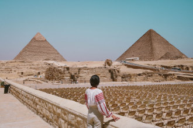
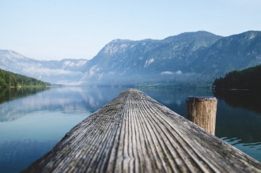

Barcelona's Architect
Antoni Gaudi's incredible buildings bring millions of tourists to Barcelona each year.
Gaudi's non-conformity, already visible in this teenage years, coupled with his quiet but firm devotion to the church, made a unique foundation for this thoughts and ideas. His search for simplicity, based on his careful observations of nature are quite apparent in his work, from the Park Guell and its incredible sculptures and mosaics, to the Church of the Sacred Family, and its organic, bulbous towers.
La Sagrada Família
 The complicatedly named and curiously unfinished masterpiece that is the Expiatory Temple of the Sacred Family is the most visited building in Barcelona. In it, Gaudi combines his vision of nature and architeture with his devotion to his faith. His focus on this project was so intense that he shunned all other projects, slept in an apartament at the work site surrounded by plans and drawings, and so completely ignored his dissheveled appearance that when, in 1926, he was struck by a streetcar in front of the church, he was mistaken for an indigent and brought to a hospital for the poor where he died soon thereafter.
The Sagrada Familia attracts even the non-religious to its doors in large part due to this tragic story and its still uninished state, of which the everpresent scaffolding and cranes are permanent reminders. But there is something more. In the Sagrada Família, Gaudi again brings nature and architecture toghether-the soaring spires look something like rising stalagmites in an underground cave-this time in reverance.
Park Guell
The Park Guell always reminds me of Howard Roark in Ayn Rand's The Fountainhead Gaudi's project in the Park Guell was to build a residential community whose residents would love where they lived. It was never finished.
Perhaps that is for the best, since now we all get to enjoy it. The Park Guell is set on a hill overlooking practically all o Barcelona. Its beautiful and even Comfortable serpentine bench is filled with foreigners and locais alike every day of the week. Its mosaic lizard have become synonymous with the city it self.